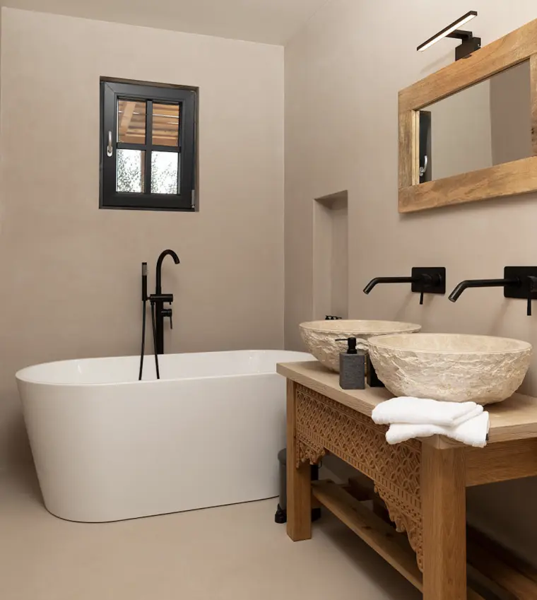
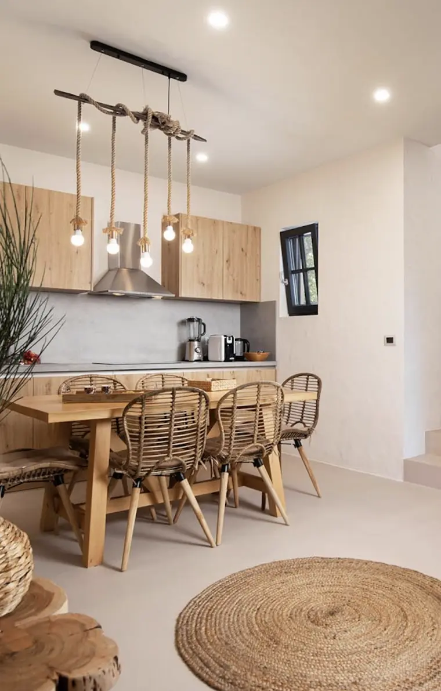
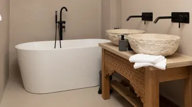

Vnitřní prostory našich domovů jsou místem, kde trávíme většinu svého času, a proto má jejich design a výzdoba zásadní význam pro naše pohodlí a estetické vnímání. Jedním z kreativních způsobů, jak přeměnit interiér a dodat mu jedinečný charakter, je použití dekorativní stěrky.
Tento materiál, často na bázi vápna nebo cementu, umožňuje vytvářet nejen esteticky přitažlivé povrchy, ale také řešení odolná proti vlhkosti a poškození. V této článku se podíváme na výhody a různé způsoby použití dekorativní stěrky v interiéru, s důrazem na koupelny a kuchyně.
Ukážeme vám také, jak dodržovat správná pravidla pro aplikaci a zároveň zachovat krásu a funkčnost těchto prostorů. Připravte se na inspiraci a objevte, jak může dekorativní stěrka obohatit vaši domácnost.
Dekorativní stěrka do koupelny: Elegantní a odolná
Vnitřní prostory našich domovů jsou místem, kde trávíme většinu svého času, a proto má jejich design a výzdoba zásadní význam pro naše pohodlí a estetické vnímání. Jedním z kreativních způsobů, jak přeměnit interiér a dodat mu jedinečný charakter, je použití dekorativní stěrky.
Tento materiál, často na bázi vápna nebo cementu, umožňuje vytvářet nejen esteticky přitažlivé povrchy, ale také řešení odolná proti vlhkosti a poškození. V této článku se podíváme na výhody a různé způsoby použití dekorativní stěrky v interiéru, s důrazem na koupelny a kuchyně.
Ukážeme vám také, jak dodržovat správná pravidla pro aplikaci a zároveň zachovat krásu a funkčnost těchto prostorů. Připravte se na inspiraci a objevte, jak může dekorativní stěrka obohatit vaši domácnost.
Dekorativní stěrka do kuchyně: Kombinace krásy a funkčnosti
Vnitřní prostory našich domovů jsou místem, kde trávíme většinu svého času, a proto má jejich design a výzdoba zásadní význam pro naše pohodlí a estetické vnímání. Jedním z kreativních způsobů, jak přeměnit interiér a dodat mu jedinečný charakter, je použití dekorativní stěrky.
Tento materiál, často na bázi vápna nebo cementu, umožňuje vytvářet nejen esteticky přitažlivé povrchy, ale také řešení odolná proti vlhkosti a poškození. V této článku se podíváme na výhody a různé způsoby použití dekorativní stěrky v interiéru, s důrazem na koupelny a kuchyně.
Ukážeme vám také, jak dodržovat správná pravidla pro aplikaci a zároveň zachovat krásu a funkčnost těchto prostorů. Připravte se na inspiraci a objevte, jak může dekorativní stěrka obohatit vaši domácnost.
Pravidla pro použití dekorativní sterky
- Před tím, než se pustíte do aplikace dekorativní stěrky v interiéru, je důležité dodržovat několik pravidel:
- Příprava povrchu: Před aplikací stěrky je třeba povrch řádně připravit. Povrch musí být čistý, suchý a hladký. Případné nerovnosti nebo trhliny je třeba opravit.
- Správný výběr stěrky: Zvolte vhodnou stěrku pro konkrétní prostor a požadovaný vzhled. Nezapomeňte na odolnost vůči vlhkosti v případě koupelny a snadnou údržbu pro kuchyni.
- Důkladná aplikace: Při aplikaci dekorativní stěrky je důležité postupovat pečlivě a precizně. Dodržujte pokyny výrobce a používejte vhodné nástroje.
- Finišování: Po aplikaci a zaschnutí stěrky je možné provést finišovací úpravy, včetně broušení a čištění, aby se dosáhlo požadovaného vzhledu..
Závěr
Dekorativní stěrka je vynikajícím způsobem, jak přidat krásu a osobitost do interiéru. Použití dekorativní stěrky do koupelny a kuchyně nabízí nejen estetické výhody, ale také praktické vlastnosti, jako je odolnost vůči vlhkosti a snadná údržba.
Díky různým texturám, vzorům a barevným možnostem můžete dosáhnout unikátního designu, který bude ladit s celkovým stylem vašeho domova. Při správné přípravě a aplikaci se dekorativní stěrka stane krásným a trvanlivým prvkem vašeho interiéru.


